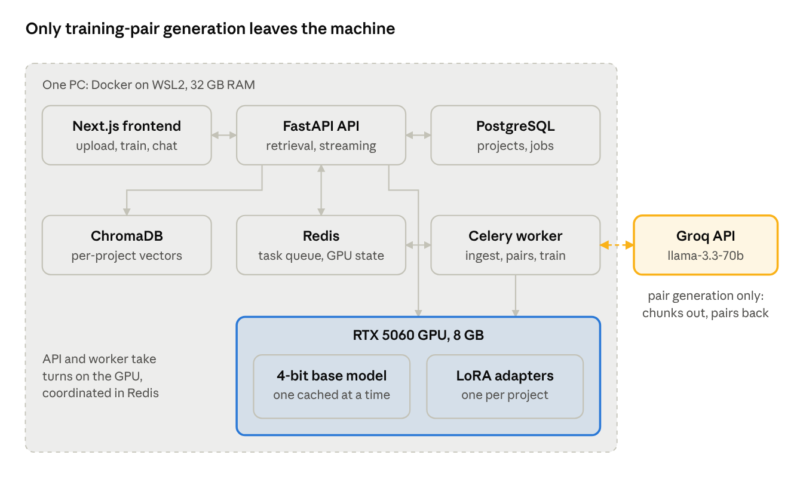

Research
Fine-Tuning Within Reach: No-Code Domain Adaptation of Small Language Models on a Single 8 GB Consumer GPU
H. M. U. Ali, M. Saleem, A. F. Ahmed, D. Subash · Department of Computer Science, DHA Suffa University
Manuscript in preparation · not yet submitted
01 In short
Adapting a language model to an organisation's own documents is usually assumed to need data-centre GPUs, machine-learning staff or a paid API. We describe SLM Studio, an open-source system that takes a user from uploaded documents to a deployed, citation-grounded assistant on one 8 GB graphics card, without writing code.
The paper makes three contributions: the system and why it's built the way it is; a memory budget, worked out from each model's published configuration, that explains why 4-bit QLoRA training of 1.7B–4B models fits in 8 GB; and a pilot run on an NVIDIA RTX 5060. It is a systems paper. It says plainly what it does not yet show.
My part: with Muhammad Saleem, I designed and built model selection, fine-tuning and retrieval, and wrote the paper. Aarish Farhan Ahmed and Darshan Subash built the backend services, task queue and deployment.
02 One PC, one GPU
Everything runs on a single desktop. The web app and the training worker take turns on the GPU: a flag in Redis says whether the card is idle, training or serving, and chat requests wait in a queue instead of crashing while a model trains.
Only one 4-bit base model sits on the GPU at a time. Each assistant is a small LoRA adapter attached to it when that assistant is asked a question, so adding an assistant costs megabytes of disk, not another GPU.
One step still leaves the machine: a hosted 70B model writes the training questions. For documents that must never leave the building, that step has to move on-device first.

03 Why it fits in 8 GB
The parts of training you can count in advance, per model, drawn to scale against the 8 GB card. For Qwen3-1.7B we also measured the real peak: the rest is activations, temporary buffers and allocator overhead.
The model is no longer the main cost. In 4-bit, Qwen3-1.7B's 1.4B non-embedding weights take 0.70 GB, against about 2.8 GB in 16-bit.
Vocabulary matters as much as size. Qwen3's 151,936-token vocabulary makes the logits for one 2,048-token sequence 1.24 GB. Phi-3.5-mini's vocabulary is a fifth of that, which is why a 3.8B model counts smaller than Qwen3-4B.
04 The pilot run
| Stage | Measured |
|---|---|
| Ingest document 1 | 67 chunks · ~12 s |
| Ingest document 2 | 220 chunks · ~17 s |
| Training pairs | 134 from 50 chunks |
| Fine-tuning peak | ~5.4 GB of 8 GB |
| Adapter on disk | 14.2 MB |
RTX 5060 (8 GB), 32 GB RAM, everything in Docker on WSL2, Qwen3-1.7B. Training finished with about 2.6 GB of the card to spare.
The assistant answered in its configured persona, cited its source document, and gave the fixed refusal sentence for questions its documents didn't cover. Those are our own observations from using it, not a measured evaluation.
What only the full run exposed
Every module passed its own tests. These faults appeared only when the whole pipeline ran end to end:
- A sequence-length setting was accepted by the API but silently ignored by the trainer, so runs used a different context length from the one configured.
- A rule meant to catch identity questions ("who are you?") matched too broadly and sent ordinary questions away from retrieval.
- A published 4-bit checkpoint of Qwen2.5-3B had incomplete weight files and wouldn't load. We switched to Qwen3-1.7B, which is why the deployed build uses it.
05 What it doesn't show yet
- No controlled quality evaluation. We haven't compared the base model, retrieval alone, fine-tuning alone, both together, and a large hosted model on held-out questions. This is the next piece of work.
- No user study. The "no code" claim rests on the interface design, not on tests with teachers or office staff.
- Training data leaves the machine. Training questions come from a hosted 70B model.
- One pilot, one card. The 4B settings ran during model selection, but their peak memory wasn't recorded.
- English only, no OCR. That matters for Urdu and mixed-language documents, which is the setting I care about most.
Interested?
I'm applying for master's programmes starting in 2027 and would like to keep working on efficient language models and honest evaluation. If that overlaps with your group, I'd be glad to send the draft.